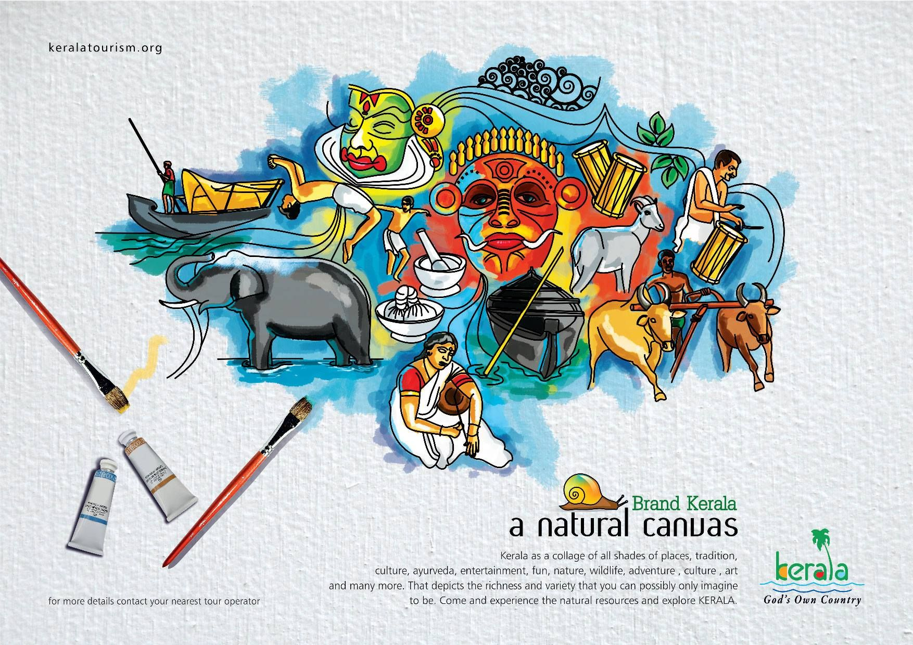
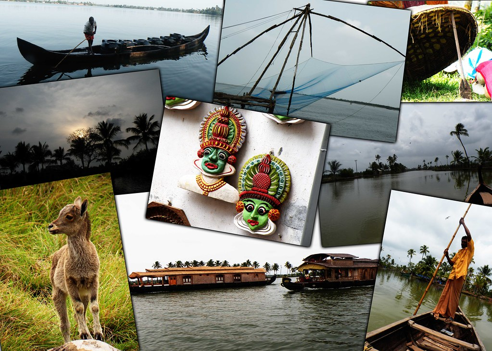

Kerela is a state on the southwestern Malabar Coast of India. It was formed on 1 November 1956, following passage of the States Reorganisation Act, by combining Malayalam-speaking regions. Spread over 38,863 km2 (15,005 sq mi), Kerala is the twenty-third largest Indian state by area. It is bordered by Karnataka to the north and northeast, Tamil Nadu to the east and south, and the Lakshadweep Sea to the west. With 33,387,677 inhabitants as per the 2011 Census, Kerala is the thirteenth-largest Indian state by population. It is divided into 14 districts with the capital being Thiruvananthapuram. Malayalam is the most widely spoken language and is also the official language of the state.
Elephants have been an integral part of the culture of the state. Almost all of the local festivals in kerala include at least one richly caparisoned elephant. Kerala is home to the largest domesticated population of elephants in India—about 700 Indian elephants, owned by temples as well as individuals.These elephants are mainly employed for the processions and displays associated with festivals celebrated all around the state. More than 10,000 festivals are celebrated in the state annually and some animal lovers have sometimes raised concerns regarding the overwork of domesticated elephants during them.In Malayalam literature, elephants are referred to as the 'sons of the sahya '.The elephant is the state animal of Kerala and is featured on the emblem of the Government of Kerala